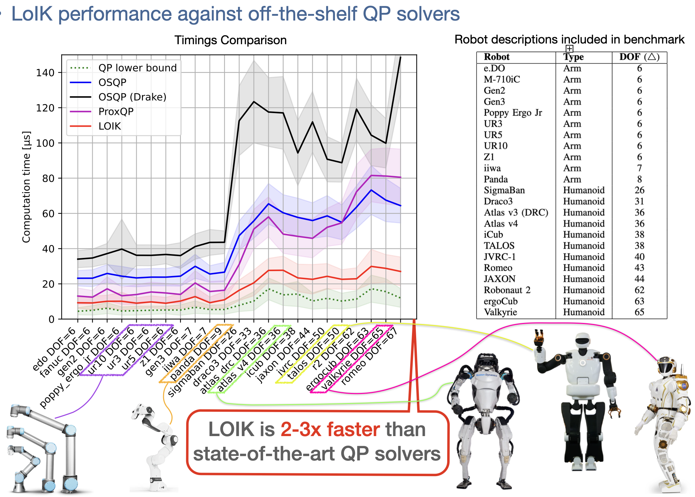

I introduced a novel constrained differential inverse kinematics solver that reframes
the problem from an Augmented Lagrangian perspective. The resulting solver, LoIK,
achieves linear-time complexity in both the total degrees-of-freedom of the robot, and the number of
constraints in the problem. The low time-complexity makes it suitable for real-time control and planning of
complex systems like humanoid robots with multiple equality/inequality constraints.
As shown in the benchmarks, LoIK consistently outperforms the state-of-the-art,
general-purpose quadratic programming solvers. This work was published in
Robotics: Science and Systems (RSS) 2024. Pre-print available here.
The open-source solver is available on GitHub.

I designed a real-time convex model predictive controller (MPC) for dynamic quadruped jumping,
utilizing the full-centroidal-dynamics model, via the centroidal-momentum matrix.
The designed controller is capable of correcting reference
trajectory in real time, and is robust enough to be directly deployed on hardware without any additional
low-level whole-body controllers. Hardware experiments for continuous 90-degree jump-turns
are conducted on the MIT mini-cheetah platform. This work is published at the
IEEE Robotics and Automation Letters (RA-L). Pre-print
available here.
I developed a bi-level trajectory optimization framework
for generating dynamic and agile motion for quadruped robots. The proposed framework
consists of two optimization components: a centroidal optimization using
reduced order centroidal dynamics with linear and angular momentum as decision variables; and
a whole-body-dynamics-based differential-dynamic-programming optimization. Consensus constraints are
enforced to drive convergence between the two components. Below are sample trajectories generated using
the proposed framework for the quadruped A1, to perform high-speed trotting, zero-gravity body re-orientation, and jump-turns.


For this project, I developed a reactive policy motion planning pipeline for wheeled-inverted-pendulum
based humanoids. A dynamics decomposition technique is proposed to split the full dynamics
of the robot into fully actuated and underactuated subsystems. Leveraging Riemannian
motion policies and differential-dynamic-programming, one can
independently plan trajectories for fully actuated and underactuated dynamics, which are then
combined into a single motion plan through null-space projection. This work is published at
ICRA 2020

In this project, I proposed a robust control-Lyapunov-function (CLF)-based tracking
controller, capable of handling large magnitudes of dynamic uncertainty
and external disturbances. Additionally, I devised an automatic robust gain
scheduling procedure that guarantees the stability and boundedness of the
proposed controller. Experimental result on the KUKA iiwa manipulator platform is demonstrated below,
for object tracking and obstacle avoidance tasks. This work is published at
Control Systems Letters 2021

In this paper, I helped develop a distributed optimal
control framework for a multi-agent robotics system based
on coordinate-descent optimization. The proposed framework exploits
the underlying graph topology to compute the optimal control
trajectory in a distributed manner. The proposed algorithm is then tested
on a problem where a team of robots is tasked with establishing a communication link
between source and destination while minimizing the overall
system mobility and communication energy cost. Here is a sample
of our algorithm running on the Gatech Robotarium platform using
a cluster of 8 mobile robots. This work is published at
CASE 2021